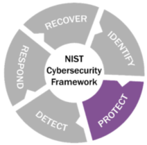

Protect
Includes
• IT/OT Convergence
• Human Element
◇ Policies and procedures
▪ Outline rules with regard to securing ICS Computer use policies
◇ Making security a priority
◇ Training and awareness
▪ Employees are a part of the your defense
▪ Talk about security in staff meetings
• Removable Media
• OPSEC (Operational Security) process:
◇ What needs to be protected?
◇ Who is the threat?
◇ What are my vulnerabilities?
◇ What is the threat level?
◇ How should we combat the threats?
• Secure Passwords
◇ Adversaries focus on gaining legitimate credentials to traverse the network
◇ NIST 800‐63B Guidelines
▪ Length increased to 64 characters
▪ Fewer complexity rules enforced
▪ Expiration of passwords no longer based on a time schedule
▪ Passwords should be compared to dictionaries and lists of common, easily‐guessed passwords
▪ Allow paste functionality from Password Managers.
• Vendor Connections
• Secure Authentication
• Network Segmentation
• Firewalls
• Data Diodes
• Patching
• Application Whitelisting